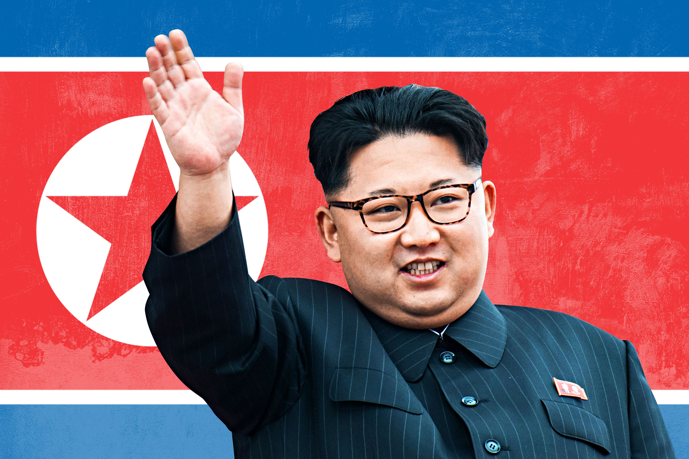

Kim Jong Un
A North Korean spoiled king. Born in 1984 still on

Eanrly Life And Education
- Birth: Kim Jong-Un's birth date is officially recognized as January 8, 1982, by North Korean authorities. However, South Korean intelligence suggests a birth year of 1983, and the US government lists his birth year as 1984. These discrepancies are thought to be due to symbolic reasons, aligning with significant dates related to his family members.
- Family Background: He is the second child of Ko Yong Hui and Kim Jong Il, making him the grandson of Kim Il Sung, the founder of North Korea. His siblings include an elder brother, Kim Jong Chul, and a younger sister, Kim Yo Jong.
- Education: Kim Jong-Un reportedly attended the International School of Berne in Gümligen, Switzerland, under the pseudonym "Chol-pak" or "Pak-chol," from 1993 to 1998. He was described as a shy, good student with interests in basketball and computer games. Later, he studied at Kim II-Sung National War College in P’yŏngyang from 2002 to 2007, obtaining degrees in physics and as an Army officer.
Rise to Power
- Succession Speculation: Rumors about Kim Jong-Un's potential succession began in 2009, with him being referred to as the "Brilliant Comrade" within North Korea. By mid-2009, he was appointed to significant positions, including the National Defense Commission and the State Security Department, indicating his growing influence.
- Official Announcement: Following his father's death in December 2011, Kim Jong-Un was declared the supreme leader of North Korea, marking the beginning of his formal leadership.
- Titles and Positions: Throughout his tenure, Kim Jong-Un has held numerous high-ranking positions, including General Secretary of the Workers' Party of Korea, President of the State Affairs, and Marshal in the Korean People's Army. He has consolidated his power through these roles and by promoting policies similar to those of his predecessors .
Leadership and policies
- Byungjin Policy: Kim Jong-Un has pursued the "byungjin" policy, aiming for the simultaneous development of the economy and the country's nuclear weapons program, reminiscent of Kim Il Sung's approach in the 1960s
- Cult of Personality: His leadership follows the tradition of a cult of personality, similar to his father and grandfather. Despite some economic and agricultural reforms, human rights violations and suppression of opposition continue under his rule.
- International Relations: Kim Jong-Un has engaged in diplomatic efforts, including meetings with South Korean President Moon Jae-in and U.S. President Donald Trump, signaling attempts to improve relations and cooperation despite ongoing nuclear tensions.